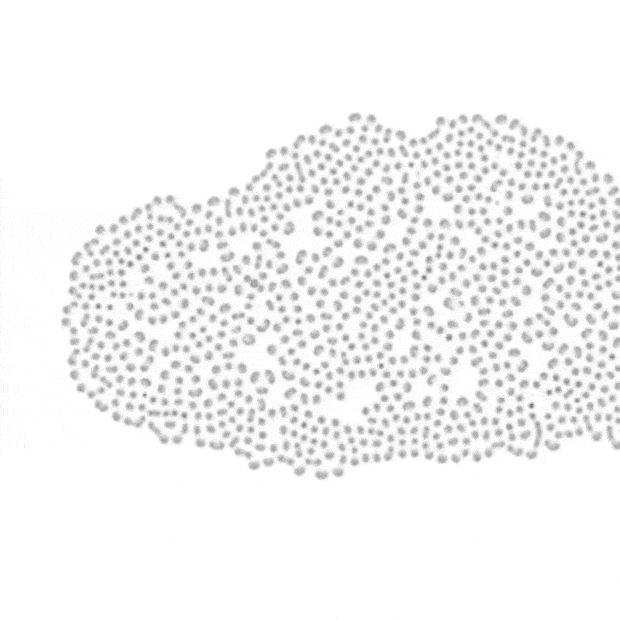
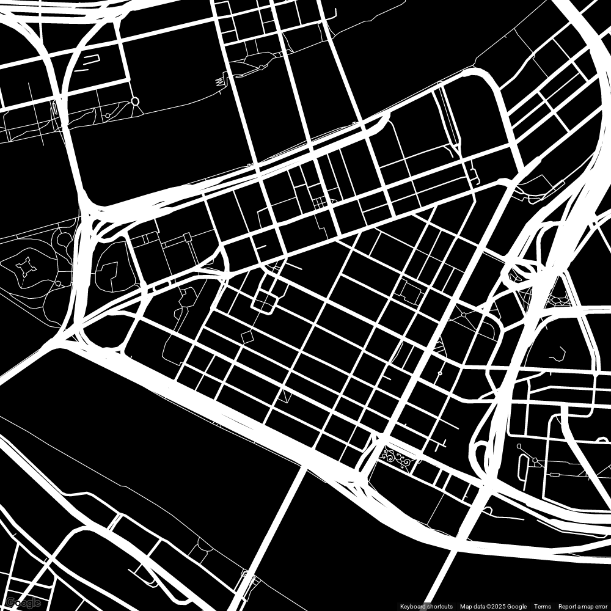
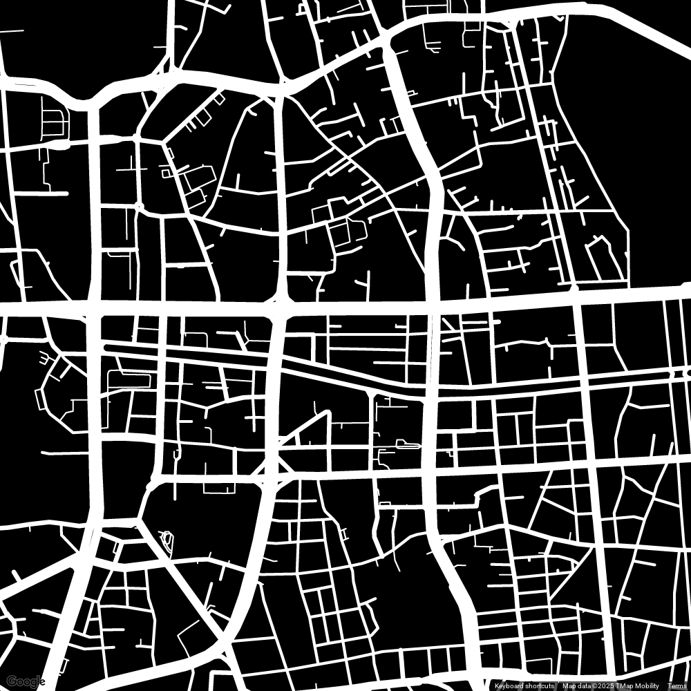
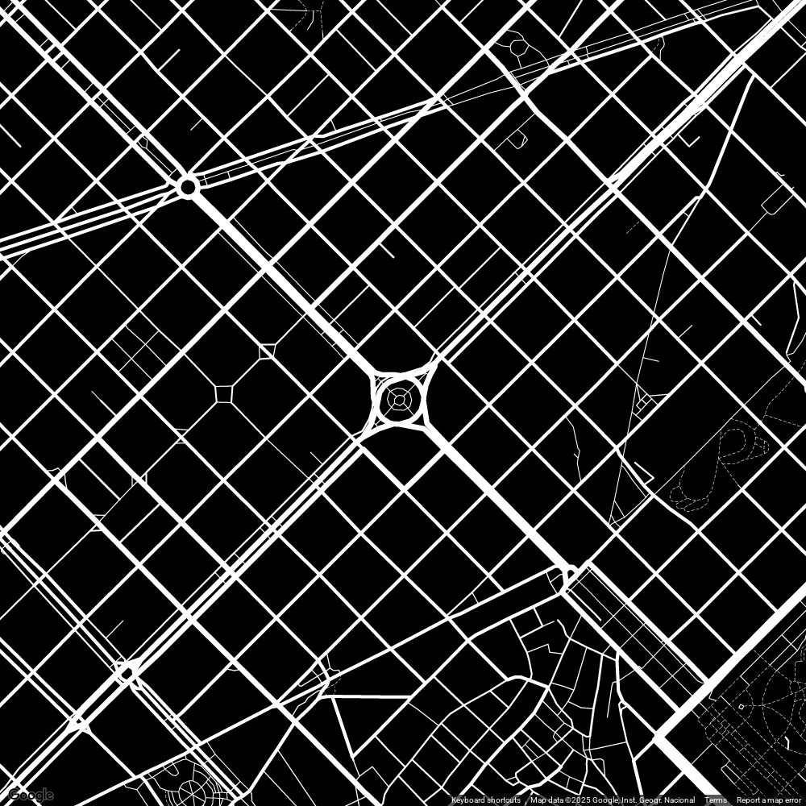
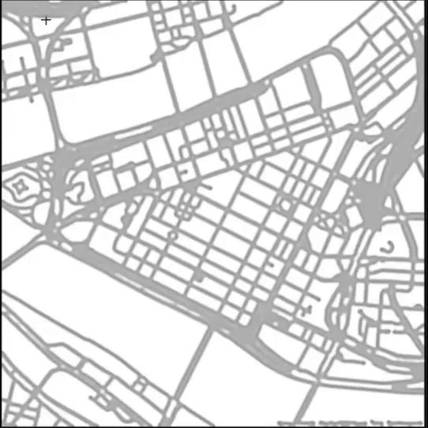
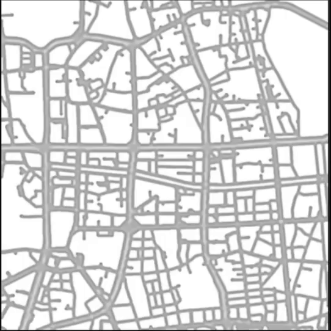
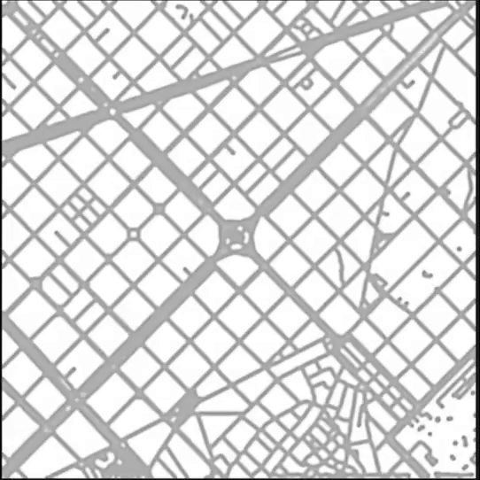

This browser tool runs the Gray-Scott reaction-diffusion model in a fragment shader. Sliders set the feed rate, the kill rate, and the two diffusion coefficients, and drawing on the canvas adds to the pattern. Feed and kill rate presets were taken from colejd/Reaction-Diffusion-ThreeJS.
It takes two kinds of input. An uploaded black-and-white image, here street maps of Pittsburgh, Seoul, and Barcelona, sets where the pattern starts. With the microphone on, each sound sample adds a spot. Pitch sets the horizontal position, and loudness sets the vertical position and the spot size.






